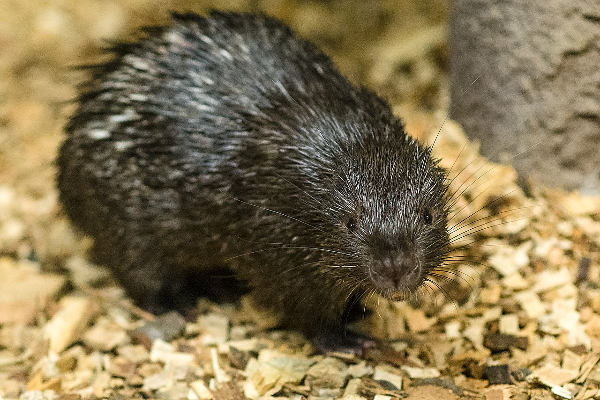

Dikobraz filipínský (Hystrix pumila), také zvaný dikobraz palawanský či osinák filipínský, je hlodavec patřící mezi nejmenší druhy dikobrazů. Dosahuje délky těla do 67 cm, ocasu do 19 cm a váhy do 5,5 kg. Pro srovnání: dikobraz srstnatonosý váží až 27 kg. Jedná se o endemický druh. Vyskytuje se pouze na filipínském ostrově Palawan (a menších ostrůvcích v jeho okolí: Busuanga, Calauit a Coron), od čehož je také odvozen jeho název. Žije jak v nížinných, tak horských tropických lesích. Nejčastěji pobývá v norách, pod kořeny, v dutinách skal apod. Ohrožení je způsobeno zejména ubýváním přirozeného prostředí tohoto druhu, tedy kácením pralesů. Jeho stavy ubývají také v důsledku lovu. Živí se rostlinnou potravou (listy, plody, kořínky). Při jejím hledání urazí tento dikobraz až 16 kilometrů během jedné noci. Po březosti v délce přibližně 100 dní se rodí jedno až dvě mláďata.
Chov v zoo je výjimečnou záležitostí. V Evropě jej na počátku roku 2018 chovaly tři zoologické zahrady: Zoo Asson ve Francii a Zoo Plzeň a Zoo Praha v Česku. V průběhu roku 2018 přibyla německá Zoo Neunkirchen v Sársku, kam byly zaslány odchovy ze Zoo Praha. Od roku 2019 je chován rovněž v Zoo Jihlava a od srpna 2020 je také v Zoo Liberec, kam byl zaslán jedinec (samec) ze Zoo Praha. V létě 2020 tak byl tento druh v šesti zoo Evropy, z toho čtyřech českých.
První jedinci tohoto druhu byli do Zoo Praha dopraveni v roce 2015 z francouzské Zoo Asson. V roce 2016 byli představeni veřejnosti v upravené expozici po kančilech.
| Rody | |
|---|---|
| Atherurus | Osinák |
| Trichys | |
| Hystrix | Dikobraz |